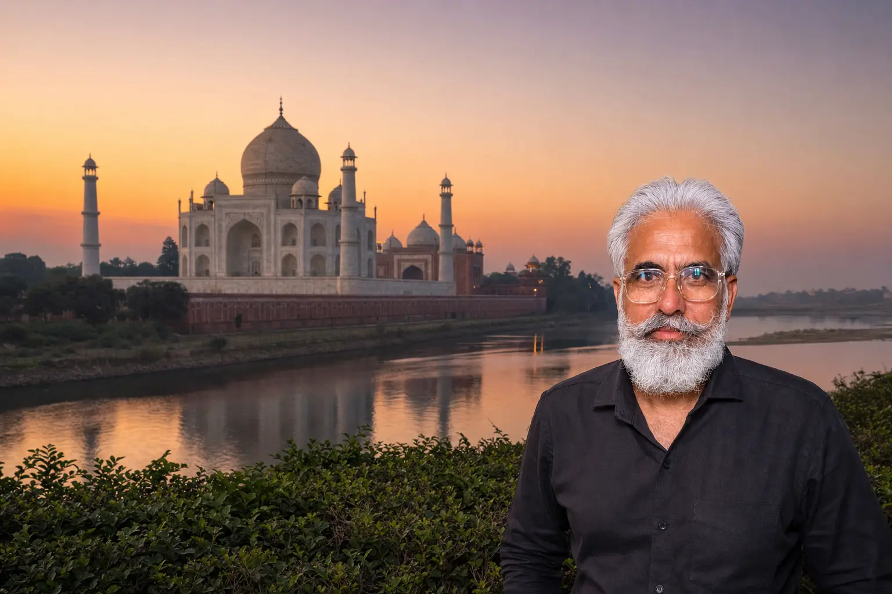

Day 1: Agra Fort, Baby Taj, Mehtab Bagh at sunset
Day 2: Taj Mahal at sunrise, then Fatehpur Sikri
Taj Mahal closed: every Friday
Cab, day 1: ₹2,500 full day (AC sedan)
Cab, day 2: ₹3,500 full day with Fatehpur Sikri
Most people give Agra a few hours. They arrive mid-morning, see the Taj Mahal in the worst light and the biggest crowd, and leave. With one night here you can see it at sunrise, when it is cool and quiet, and you have time for the places most day-trippers miss. This is the plan we suggest to our own guests.
Padma Shree Travels provides the car and driver for both days, with hotel pickup and waiting at every stop. WhatsApp +91 87200 81102 with your dates.
| Time | Plan |
|---|---|
| By 12:00 PM | Arrive in Agra, check in, early lunch |
| 1:30 PM | Agra Fort (about 2 hours) |
| 4:00 PM | Tomb of Itimad-ud-Daulah, the Baby Taj (45 minutes) |
| 5:00 PM | Mehtab Bagh for the sunset view of the Taj Mahal |
| Evening | Dinner, or a walk in Sadar Bazaar |
Agra Fort comes first because it tells you the story. This is where the Mughal emperors lived, and where Shah Jahan spent his last years looking across the river at the Taj. Seeing the fort first makes the Taj mean more the next morning.
The Baby Taj is small, finely decorated and rarely crowded. Mehtab Bagh is a garden directly across the Yamuna from the Taj Mahal. You see the monument from behind, lit by the setting sun, with a fraction of the crowd.
If your train or flight arrives early in the day, add Akbar's Tomb at Sikandra before lunch.
| Time | Plan |
|---|---|
| 5:00–5:30 AM | Pickup from your hotel |
| Sunrise | Taj Mahal (2 to 2.5 hours) |
| 8:30 AM | Back to the hotel for breakfast and checkout |
| 10:30 AM | Drive to Fatehpur Sikri (about 1 hour) |
| 11:30 AM–2:00 PM | Fatehpur Sikri |
| 3:00 PM onward | Back in Agra for your train, or continue to Jaipur |
The gates open around sunrise, so the aim is to be in the queue before that. The first hour is the calmest of the day, and the light on the marble changes by the minute. Our Taj Mahal sunrise guide covers gates and what you can carry inside.
Fatehpur Sikri is Akbar's abandoned capital, 40 km out on the Jaipur road. If you are heading to Jaipur next, you do not need to come back. The car carries on from there with your luggage in the boot.
The Taj Mahal is closed to visitors every Friday. Agra Fort, the Baby Taj, Mehtab Bagh and Fatehpur Sikri stay open. So swap the days: do Fatehpur Sikri and the fort on Friday, and the Taj at sunrise on Saturday. If you arrive on Thursday, see the Taj that same afternoon.
| Day | Package | AC sedan | AC SUV |
|---|---|---|---|
| Day 1 | Agra full day, 8 hours / 80 km | ₹2,500 | ₹3,500 |
| Day 2 | Full day plus Fatehpur Sikri | ₹3,500 | ₹4,500 |
Fares include the AC car, fuel and driver. Monument tickets, tolls and parking are paid separately. If your day one is short, a half-day booking from ₹1,500 may be enough. Tell us your arrival time and we will suggest the cheaper option when it fits.
Monument tickets can be bought online or at the counters. Indian and foreign visitors pay different rates. At the Taj Mahal, going inside the main mausoleum needs an extra ticket, so decide before you queue.
For a sunrise visit, a hotel in the Taj Ganj or Fatehabad Road area keeps the morning drive short. We pick up from any hotel in Agra.
It can be done. See our one-day Agra sightseeing plan. If you have a third day, spend it in Mathura and Vrindavan or pick from our list of places to visit near Agra.
Yes. Two days is the ideal length for Agra. It allows Agra Fort, the Baby Taj and a Mehtab Bagh sunset on the first day, and the Taj Mahal at sunrise followed by Fatehpur Sikri on the second day, without rushing.
Day 1: Agra Fort in the afternoon, the Tomb of Itimad-ud-Daulah, and Mehtab Bagh at sunset. Day 2: the Taj Mahal at sunrise, breakfast and checkout, then Fatehpur Sikri, about 40 km away, before leaving Agra or continuing to Jaipur.
Sunrise is better. It is cooler, the crowds are thinner and the light on the marble is softest. For sunset, the view from Mehtab Bagh across the river is the better choice. A two-day stay lets you do both.
The Taj Mahal is closed to visitors every Friday. Visit Agra Fort, the Baby Taj, Mehtab Bagh and Fatehpur Sikri on Friday, which stay open, and see the Taj Mahal on the other day.
With Padma Shree Travels, a full day of Agra sightseeing is ₹2,500 in an AC sedan, and a full day including Fatehpur Sikri is ₹3,500. That is ₹6,000 for both days in a sedan, or ₹8,000 in an SUV. Tickets, tolls and parking are extra.
Fixed fare in writing · Driver waits at every stop · Driver details before pickup